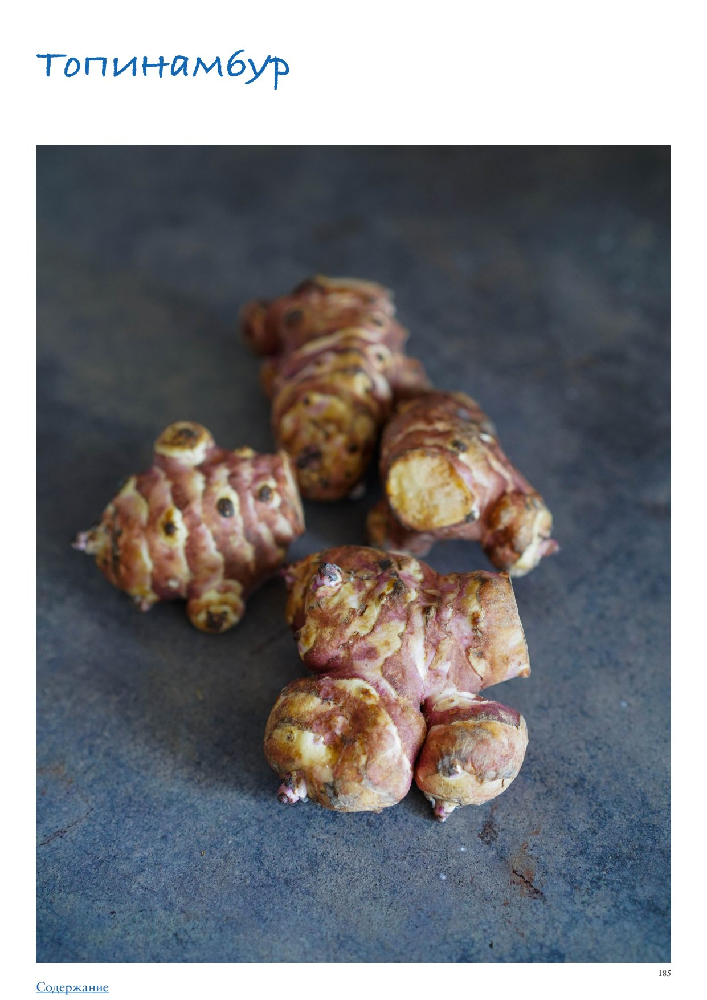

<!DOCTYPE html>
<html lang="en">
<head>
<meta charset="UTF-8">
<meta name="viewport" content="width=device-width, initial-scale=1.0">
<title>Топинамбур</title>
<style>
  * { box-sizing: border-box; margin: 0; padding: 0; }
  body { font-family: -apple-system, BlinkMacSystemFont, 'Segoe UI', Roboto, sans-serif;
         background: #faf7f4; color: #2d2926; max-width: 680px; margin: 0 auto; padding-bottom: 40px; }

  .photo-wrap img { width: 100%; max-height: 380px; object-fit: cover; object-position: center center; display: block; }

  .header { padding: 24px 24px 16px; }
  h1 { font-size: 26px; font-weight: 700; line-height: 1.2; margin-bottom: 10px; color: #1a1714; }
  .meta { font-size: 13px; color: #9a8a80; margin-bottom: 6px; }
  .rating { display: inline-block; background: #fff3e6; color: #c05f2a;
             font-size: 13px; font-weight: 600; padding: 3px 10px; border-radius: 20px; margin-bottom: 8px; }
  .source { font-size: 12px; color: #b0a09a; margin-top: 4px; }

  .info-bar { font-size: 13px; color: #5a4a3a; margin: 6px 0 4px; }

  .section { padding: 0 24px; margin-bottom: 24px; }
  .section-title { font-size: 15px; font-weight: 700; color: #7a4f2a;
                    text-transform: uppercase; letter-spacing: 0.6px;
                    margin-bottom: 12px; display: flex; align-items: center; gap: 8px; }
  .section-icon { font-size: 17px; }

  .subsection-title { font-size: 15px; font-weight: 700; color: #3a2a1a;
                       margin: 24px 0 10px; padding-bottom: 5px;
                       border-bottom: 2px solid #e8d5b8; }
  .ingr-subheader { font-size: 13px; font-weight: 700; text-transform: uppercase;
                     letter-spacing: 0.5px; color: #8a6a3a; margin: 14px 0 4px; }
  .ingr-list { list-style: none; display: flex; flex-direction: column; gap: 8px; }
  .ingr-list li { font-size: 15px; line-height: 1.5; padding: 8px 12px;
                   background: white; border-radius: 8px;
                   border-left: 3px solid #f0c080; }
  .qty { font-weight: 600; color: #c05f2a; }

  .steps { list-style: none; counter-reset: steps; display: flex; flex-direction: column; gap: 12px; }
  .steps li { font-size: 15px; line-height: 1.6; padding: 12px 14px 12px 48px;
               background: white; border-radius: 10px; position: relative; }
  .steps li::before { counter-increment: steps; content: counter(steps);
                       position: absolute; left: 12px; top: 12px;
                       width: 26px; height: 26px; background: #f0c080;
                       border-radius: 50%; display: flex; align-items: center;
                       justify-content: center; font-weight: 700; font-size: 13px; color: #7a4f2a; }

  .notes-list { list-style: disc; padding-left: 20px; margin: 0; }
  .notes-list li { font-size: 15px; line-height: 1.6; color: #2d2926; }

  .my-notes-section { margin-top: 8px; }
  .my-notes-box { background: #fffef5; border: 1.5px dashed #c8b870; border-radius: 12px;
                  padding: 14px 18px; font-size: 14px; line-height: 1.7; color: #5a4a30; }
  .my-notes-box p { margin-bottom: 6px; }
  .my-notes-box p:last-child { margin-bottom: 0; }
  .empty-note { color: #c0b090; font-style: italic; }

  .recipe-table { width: 100%; border-collapse: collapse; margin: 4px 0 12px; font-size: 14px; }
  .recipe-table th { background: #f5ede4; color: #7a4a28; padding: 8px 12px;
                      text-align: left; border: 1px solid #e0cfc0; font-weight: 700; }
  .recipe-table td { padding: 8px 12px; border: 1px solid #e8ddd5; vertical-align: top;
                      line-height: 1.5; }
  .recipe-table tr:nth-child(even) td { background: #fdf8f5; }

  p.para { font-size: 15px; line-height: 1.65; color: #2d2926; margin-bottom: 12px; }
  p.para:last-child { margin-bottom: 0; }

  .inline-photo { margin: 16px 0; border-radius: 10px; overflow: hidden; }
  .inline-photo img { width: 100%; max-height: 320px; object-fit: cover; object-position: center center; display: block; }
  .inline-photo.portrait { display: flex; flex-direction: column; align-items: center; background: transparent; }
  .inline-photo.portrait img { width: auto; max-width: 55%; max-height: none; object-fit: contain; border-radius: 10px; }
  .inline-photo.portrait figcaption { width: 55%; text-align: center; }
  .inline-photo figcaption { font-size: 12px; color: #9a8a80; padding: 6px 10px;
                               background: #f5f0eb; font-style: italic; }
  .inline-video { margin: 16px 0; border-radius: 10px; overflow: hidden; background: #000; }
  .inline-video video { width: 100%; max-height: 400px; display: block; }
  .inline-video figcaption { font-size: 12px; color: #9a8a80; padding: 6px 10px;
                               background: #f5f0eb; font-style: italic; }

  .related-section { font-size: 13px; margin-top: 8px; color: #9a8a80; }
  .related-label { font-weight: 600; color: #7a4f2a; }
  .related-link { color: #c05f2a; text-decoration: none; font-weight: 500; }
  .related-link:hover { text-decoration: underline; }

  .cooked-bar { font-size: 13px; margin-top: 10px; display: flex; flex-wrap: wrap; align-items: center; gap: 6px; }
  .cooked-label { font-weight: 600; color: #7a4f2a; }
  .cooked-chip { background: #f0ede6; color: #5a4a3a; padding: 3px 10px;
                  border-radius: 20px; font-size: 13px; border: 1px solid #d8cfc4; }

  .my-photo-wrap { margin: 24px 24px 0; border-radius: 12px; overflow: hidden;
                    border: 2px solid #e8d9c8; }
  .my-photo-label { background: #f5ede4; color: #7a4f2a; font-size: 12px; font-weight: 600;
                     padding: 6px 14px; letter-spacing: 0.4px; }
  .my-photo-wrap img { width: 100%; max-height: 420px; object-fit: cover;
                        object-position: center; display: block; }

  .back-btn { display: inline-flex; align-items: center; gap: 6px;
               margin: 28px 24px 20px;
               background: #c05f2a; color: white;
               font-size: 14px; font-weight: 600;
               padding: 8px 16px; border-radius: 20px;
               text-decoration: none; }
  .back-btn:hover { background: #a04e22; text-decoration: none; }

  @media (max-width: 480px) {
    h1 { font-size: 22px; }
    .steps li { padding-left: 42px; }
  }
</style>
</head>
<body>
  <a class="back-btn" href="../cookbook.html">← Catalog</a>
  <div class="photo-wrap"></div>
  <div class="header">
    
    <h1>Топинамбур</h1>
    <div class="meta">ПРАктика. Овощи</div>
    
    
    
    <div class="source">Source: ПРАктика. Овощи</div>
  </div>
  
  
        <div class="section">
          
          <p class="para">Топинамбур</p><p class="para">Многим топинамбур знаком как иерусалимский артишок, именно под этим именем он известен в Европе и Америке, хотя с артишоком его роднит только разве что отдаленно похожий вкус. Кто￾то чувствует в хрустящей мякоти топинамбура изящные нотки ванили, кому-то чудится аромат земляники, а другие отмечают родство его вкуса с каштанами, грушей или орехами. Что ни говори, интересный и интригующий этот топинамбур, явно стоит попробовать его приготовить. Топинамбур также называют «канадским трюфелем» и «земляной грушей». Раньше он был частым гостем на дачных участках, возможно, и сейчас там обитает, иногда неузнанный, растет высокими зарослями и красиво цветет. Желтые цветки топинамбура похожи на мини-версию родственного ему подсолнуха, с такими же лепестками, но небольшой сердцевинкой. Топинамбур используют в салатах в свежем, жареном и запеченном виде, готовят с ним супы, пюре и бульоны, соусы и десерты. В кулинарных целях также активно применяют сироп из топинамбура, так как он является более полезной альтернативой сахару. Из клубней готовят полезные снеки и чипсы, которые можно использовать как дополнение к блюдам. В Америке порошок из высушенного топинамбура выступает здоровой альтернативой кофе, наподобие кофейного напитка из цикория. Топинамбур выращивают с весны и собирают урожай с конца лета до первых заморозков и даже позже, так как этот овощ морозостоек. Холод делает топинамбур слаще. Как выбирать При выборе топинамбура ориентируйтесь на его крепость, твердость и упругость. Сморщенные и вялые клубни лучше отложить. Кожура должна быть светлой, без пятен и темных вмятин. Допустимо небольшое количество земли. Топинамбур долго не хранится, даже в самых комфортных для него условиях, в погребе, пересыпанный влажной землей и песком, он может лежать лишь пару месяцев. К сожалению, он очень капризен и быстро начинает вянуть, а все потому, что его кожура тонкая и нежная. Поэтому покупать в большом количестве топинамбур не стоит: в холодильнике он пролежит в бумажном пакете от силы неделю-две. Топинамбур можно очистить и заморозить в плотно закрытом пакете из пищевого пластика с зиплоком. Как подготавливать и нарезать Клубни топинамбура неправильной вытянутой формы с шишечками и наростами, редко попадается идеально гладкий, поэтому удобнее всего соскоблить кожуру ножом или, если кожица тонкая, достаточно тщательно вымыть жесткой губкой или щеткой. Топинамбур можно есть сырым, нарезав соломкой или натерев на терке. Тонкие ломтики для чипсов вы получите с помощью терки Bоrner или мандолины. Готовят топинамбур как целиком, так и нарезав соломкой, брусочками или ломтиками, как картошку. Лайфхаки</p><ul class="notes-list"><li>Легко очистить сваренный «в мундире» топинамбур: отварить клубни около 15 минут на среднем огне после закипания воды, затем охладить под холодной водой и очистить.</li><li>Несмотря на все его полезные свойства, бывает, что топинамбур вызывает бурление в желудке. Англоязычные шефы иногда называют его fartichoke («пукательный артишок», извините!). Если вы замечали за собой подобную реакцию после съеденных 1–2 яблок, возможно, надо быть осторожнее и с сырым топинамбуром. Такую чувствительную реакцию желудка можно</li></ul><p class="para">снизить, если использовать его в приготовленном виде: запеченном или вареном.</p><ul class="notes-list"><li>Чтобы топинамбур не терял цвет и не чернел, очищенные и нарезанные клубни нужно сбрызнуть лимонным соком или залить водой, чтобы полностью покрывала клубни, добавить около 1 ст. л. яблочного уксуса на 1 л воды и оставить на некоторое время до момента приготовления. Как готовить Топинамбур готовят теми же способами, что и картофель, время на приготовление одинаковое. Проверить готовность можно вилкой или кончиком ножа, проткнуть, и если мягкий — готово. Благодаря довольно нейтральному и нежному вкусу топинамбур может дополнить самые разные блюда: супы, рагу и запеканки, выступать как начинка пирогов или дополнением к более привычным овощам (тыкве, картофелю, кабачкам), использоваться в блюдах из дичи, мяса, птицы и рыбы в качестве гарнира. Можно приготовить запеченный топинамбур с картофелем, чесноком и сливками, наподобие дофинуа, и, последовав примеру Эскофье, перевести это блюдо на несколько уровней выше, заменив чеснок трюфелем, а оливковое масло — сливочным. Рецепты блюд из топинамбура на каждый день</li></ul><ol class="steps"><li>Закуска из топинамбура. Натереть 500 г клубней топинамбура тонкими ломтиками на мандолине, сбрызнуть лимонным соком, полить оливковым маслом, посолить, поперчить, посыпать любыми жареными семечками или дроблеными орешками, добавить нежный или пикантный раскрошенный или натертый сыр.</li><li>Топинамбур по-английски. Клубни топинамбура (около 1 кг) вымыть, положить в кастрюлю, залить кипятком, добавить 1/2 ч. л. соли, поставить на средне-слабый огонь, готовить 5–7 минут. Откинуть в дуршлаг и очистить от кожицы под струей холодной воды. Разрезать на ломтики или четвертинки. В сковородке на среднем огне разогреть 1 ст. л. топленого масла, выложить топинамбур, обжарить 2–3 минуты до светло-золотистого цвета, убавить огонь и томить 25–30 минут. Влить около 100 мл жирных сливок, посолить, поперчить, при желании добавить веточку розмарина, выпарить сливки несколько минут, пока соус слегка не загустеет. Удалить розмарин. Подать в качестве гарнира к мясу (например, отварной телятине), посыпав по желанию зеленью эстрагона и кервеля.</li><li>Запеченный топинамбур с розмарином или тимьяном. Нарезать топинамбур ломтиками, выложить на противень, сбрызнуть оливковым маслом, посолить, поперчить, разложить рядом несколько зубчиков чеснока, сверху выложить веточки розмарина или тимьяна, запекать в разогретой до 200 °С духовке около 40 минут.</li><li>Чипсы из топинамбура. Тщательно вымыть 300 г клубней топинамбура, залить водой с 1 ч. л. соды и дать постоять 5–10 минут. Затем промыть, еще раз поскоблить ножом при необходимости, нарезать тонкими ломтиками с помощью мандолины или овощечистки. Выложить ломтики в миску, добавить 70 мл оливкового масла, соль, перец, паприку по вкусу, перемешать. Выложить в один слой на противень, выстеленный бумагой для выпечки, поместить в разогретую до 200 °С духовку и запекать 20 минут, пока ломтики не станут золотистыми и хрустящими. В процессе можно перемешать. Удобно готовить такие чипсы в аэрофритюрнице: 10–15 минут при 160 °С, периодически встряхивая корзину.</li><li>Топинамбур с овощами в вине на 4 порции 500 г топинамбура 1 морковка 1 стебель сельдерея 1 луковица 2 помидора маленький пучок петрушки 2 зубчика чеснока 250 мл вина 250 мл овощного бульона 2 веточки тимьяна 4–5 горошин черного перца 15 г сливочного масла соль, свежемолтый черный перец</li><li>Топинамбур, морковь, сельдерей и лук нарезать ломтиками, помидоры — дольками, петрушку и чеснок порубить.</li><li>Выложить топинамбур, морковь, сельдерей и лук в кастрюлю, залить вином и бульоном, добавить тимьян и перец горошком, варить на небольшом огне 40 минут.</li><li>Добавить в кастрюлю помидоры, томить еще 15 минут.</li><li>Посолить, поперчить, добавить петрушку, чеснок и сливочное масло, перемешать и подавать. Салат из топинамбура Можно дополнить салат орешками вместо семечек, добавить разнообразную зелень, от мяты до укропа и петрушки, салатные листья, рукколу. Топинамбур хорошо сочетается с пикантным сыром, поэтому можно посыпать готовый салат тертым пармезаном. Салат не обязательно солить и перчить. При желании можно добавить дополнительно к заправке 1 ч. л. меда, немного вяленой клюквы, лимонного сока и цедры — получится совсем другой, почти десертный вкус. на 4 порции 300 г топинамбура 2 кисло-сладких яблока 1 морковка 1 ст. л. лимонного сока 2 ст. л. греческого йогурта или сметаны жареные тыквенные семечки для подачи соль, свежемолотый черный перец</li><li>Топинамбур, яблоки и морковь очистить, нарезать тонкой соломкой или натереть на терке.</li><li>Сбрызнуть лимонным соком, заправить йогуртом или сметаной, при желании посолить и поперчить.</li><li>Перемешать и подавать к столу, посыпав семечками. Сочетание топинамбура с другими продуктами Топинамбур отлично сочетается с дичью (утка, кабан), бараниной, говядиной, курицей, артишоками, каштанами, картофелем, тыквой, сельдереем, морковью, помидорами, кабачками, капустой, луком, чесноком, грибами, орехами, семечками, пикантным и нежным сыром, сливочным, топленым, оливковым и ореховым маслом, розмарином, тимьяном, шалфеем, яблоком, сливой, персиком, айвой, малиной, земляникой, брусникой и клюквой, ванилью, лимонной цедрой, корицей.</li><li>Что еще можно приготовить с топинамбуром</li></ol><ul class="notes-list"><li>Сливочный крем-суп с креветками и чипсами из топинамбура</li><li>Суп-пюре с фетой и сухариками или обжаренными на топленом масле грибами</li><li>Гратен</li><li>Запеченный топинамбур с помидорами и фетой</li><li>Овощные оладьи, драники или хашбраун</li><li>Пирог с яблоками, топинамбуром и корицей</li><li>Варенье, желе, джем из топинамбура с добавлением фруктов и ягод</li><li>Мармелад из топинамбура со сливами или айвой</li></ul>
        </div>
</body>
</html>